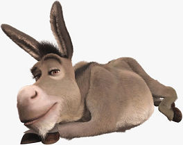

Pagina Riechel
Coriosidade da vida do dia a dia

Oi nóis Aqui colega
Proezas do Jogo
Se o amigo tem sonhos,
E os quer interpretar,
As quadras que abaixo seguem,
Mostram em que bicho jogar!
E prá maior segurança,
E afastar os revezes,
Deve repetir o jogo,
Pelo menos tres vezes!
Sonhar com bicho de pena,
Pretinho que até reluz.
Pode cercar o 04,
Que e a dezena do avestruz!
Sonhar com gente finoria,
Cheia de papo e lábia,
Só jogando o bicho certo,
É a dezena da águia!
Sonhar com muito trabalho,
muito esforço e muita dor,
Jogue no onze e no doze,
O burro do apostador!
Se o sonho e o pensamento,
Traçam volutas no ar,
É na gentil borboleta,
Que então deveras jogar!
Sonhar com persiguição,
Na subida de algum morro,
Jogue nas quatro dezenas,
E no grupo do cachorro!
Quem sonha subir a montanha,
A ponto que até desaba,
A dezena é 24,
E o grupo e da cabra...
Sonhando em fazer negócios,
Para ganhar bom dinheiro,
Jogue firme o vinte e sete,
Que é a dezena do carneiro!
Se o seu sonho é num deserto,
Cavalgando em uma duna,
Jogar forte no camelo,
É princípio da fortuna!
Sonhar com a dança do ventre,
Com a bailarina que se dobra,
Cerque todas as dezenas,
Bem como o grupo da cobra!
Se está chegando a quarentena,
Pra checar seu aparelho,
Jogue as dezenas eo grupo,
Concernentes ao coelho!
Sonhando com montaria,
e com outras diversôes,
Só cavalo bem cercado,
Poderá render milhões!
Se o sonho é com bate-estaca,
Ou com rolo compressor,
É só cercar o elefante,
E esperar o pagador,
Sonhar com a noite de lua,
Sempre bela a pratear,
O jogo e cercar o galo,
Desde o grupo até a milhar!
Sonhar com salteadores,
Que entram pelos telhados,
O jogo é cercar o gato,
Por todos os cinco lados!
Quando o sonho é passado,
Nas águas de um patanal,
O jacaré na cabeça,
E mesmo o jogo ideal!